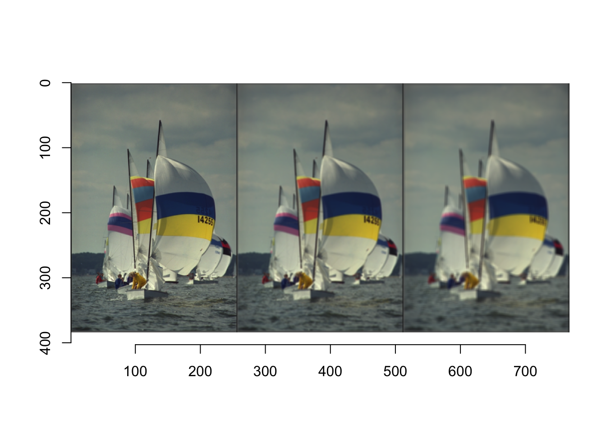
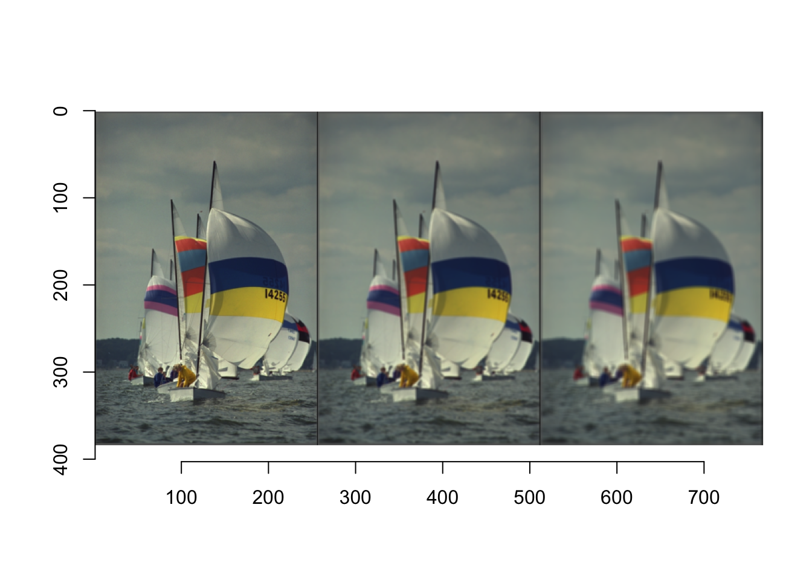

Kod
library(tidyverse)
library(imager)
c(1, 3, 5) |>
map_il(~boxblur(boats, .x)) |>
imappend("x") |>
plot()
Zasadniczą własnością operacji punktowych (omówionych w poprzednim rozdziale) jest to, że każda nowa wartość piksela zależy tylko od oryginalnego piksela w tej samej pozycji. Możliwości operacji punktowych są jednak ograniczone. Nie mogą one na przykład zrealizować zadania wyostrzenia lub wygładzenia obrazu (patrz Rysunek fig-flt1). Taką funkcję mogą spełniać filtry. Są one podobne do operacji punktowych w tym sensie, że również tworzą odwzorowanie 1:1 współrzędnych obrazu, czyli geometria obrazu nie ulega zmianie.
library(tidyverse)
library(imager)
c(1, 3, 5) |>
map_il(~boxblur(boats, .x)) |>
imappend("x") |>
plot()
Zastosowany powyżej filtr rozmycia obrazu jest jednym z filtrów liniowych, który działa jak swego rodzaju uśrednienie pikseli w lokalnym otoczeniu. Otoczenie to oczywiście się przesuwa po całym obrazie tworząc obraz przefiltrowany. Chcąc nieco bardziej formalnie przedstawić operację filtracji musimy podzielić filtry na liniowe i nieliniowe.
Filtry liniowe są nazywane w ten sposób, ponieważ łączą wartości pikseli w otoczeniu w sposób liniowy, czyli jako suma ważona. Szczególnym przykładem jest omówiony na początku proces uśredniania lokalnego (Równanie eq-1), gdzie wszystkie dziewięć pikseli w lokalnym otoczeniu 3 × 3 jest dodawanych z identycznymi wagami (1/9). Dzięki temu samemu mechanizmowi można zdefiniować mnóstwo filtrów o różnych właściwościach, modyfikując po prostu rozkład poszczególnych wag.
\[ I'(u,v) = \frac19\sum_{j = -1}^1\sum_{i = -1}^1I(u+i,v+j), \tag{6.1}\]
Dla dowolnego filtra liniowego rozmiar i kształt regionu wsparcia (ang. support region), jak również wagi poszczególnych pikseli, są określone przez jądro filtra (ang. kernel) \(H(i,j)\). Rozmiar jądra \(H\) równa się rozmiarowi regionu filtrującego, a każdy element \((i, j)\) określa wagę odpowiedniego piksela w sumowaniu. Dla filtra wygładzającego 3x3 w równaniu (Równanie eq-1), jądro filtra to
\[ H = \begin{bmatrix} 1/9,&1/9,&1/9\\ 1/9,&1/9,&1/9\\ 1/9,&1/9,&1/9 \end{bmatrix}= \frac19\begin{bmatrix} 1,&1,&1\\ 1,&1,&1\\ 1,&1,&1 \end{bmatrix} \]
ponieważ każda z wartości filtra wnosi 1/9 do piksela wynikowego.
W istocie, jądro filtra \(H(i, j)\) jest, podobnie jak sam obraz, dyskretną, dwuwymiarową funkcją o rzeczywistą, \(H : \mathbb{Z} \times \mathbb{Z} \to \mathbb{R}\). Filtr ma swój własny układ współrzędnych z początkiem - często określanym jako hot spot - przeważnie (ale niekoniecznie) znajdującym się w środku. Tak więc współrzędne filtra są na ogół dodatnie i ujemne (Rysunek fig-flt2). Funkcja filtra ma nieskończony zakres i jest uważana za zerową poza obszarem zdefiniowanym przez macierz \(H\).

Dla filtru liniowego wynik jest jednoznacznie i całkowicie określony przez współczynniki jądra filtru. Zastosowanie filtru do obrazu jest prostym procesem, który został zilustrowany na Rysunek fig-flt2. W każdej pozycji obrazu \((u, v)\) wykonywane są następujące kroki:
Opisując formalnie, wartości pikseli nowego obrazu \(I'(u,v)\) są obliczane przez operację
\[ I'(u,v) = \sum_{i,j\in R_H}I(u+i, v+j)\cdot H(i,j), \tag{6.2}\]
gdzie \(R_H\) oznacza zbiór współrzędnych pokrytych przez filtr \(H\). Nie całkiem dla wszystkich współrzędnych, aby być dokładnym. Istnieje oczywisty problem na granicach obrazu, gdzie filtr sięga poza obraz i nie znajduje odpowiadających mu wartości pikseli, które mógłby wykorzystać do obliczenia wyniku. Na razie ignorujemy ten problem granic, ale w dalszej części tego wykładu się tym zajmiemy.

Skoro rozumiemy już zasadnicze działanie filtrów i wiemy, że granice wymagają szczególnej uwagi, możemy pójść dalej i zaprogramować prosty filtr liniowy. Zanim jednak to zrobimy, możemy chcieć rozważyć jeszcze jeden szczegół. W operacji punktowej każda nowa wartość piksela zależy tylko od odpowiadającej jej wartości piksela w oryginalnym obrazie, dlatego nie było problemu z zapisaniem wyników z powrotem do tego samego obrazu - obliczenia są wykonywane “w locie” bez potrzeby pośredniego przechowywania. Obliczenia w miejscu nie są generalnie możliwe dla filtra, ponieważ każdy oryginalny piksel przyczynia się do zmiany więcej niż jednego piksela wynikowego i dlatego nie może być zmodyfikowany przed zakończeniem wszystkich operacji.
Potrzebujemy zatem dodatkowego miejsca na przechowywanie obrazu wynikowego, który następnie może być ponownie skopiowany do obrazu źródłowego (jeśli jest to pożądane). Tak więc kompletna operacja filtrowania może być zaimplementowana na dwa różne sposoby (Rysunek fig-flt4):

Dla obu wersji wymagana jest taka sama ilość pamięci masowej, a więc żadna z nich nie oferuje szczególnej przewagi. W poniższych przykładach używamy na ogół wersji B.
W filtrze prezentowanym powyżej wagi nie muszą być wszystkie takie same. Przykładowo filtr \(H(u,v)\) określony następująco
\[ H(u,v)=\begin{bmatrix} 0.075,&0.125,&0.075\\ 0.125,&0.200,&0.125\\ 0.075,&0.125,&0.075 \end{bmatrix} \tag{6.3}\]
również uśrednia wartości w regionie wsparcia filtru ale nadając największe wagi wartościom w środku.
Zauważmy, że wagi filtra \(H\) są tak dobrane aby się sumowały do 1. Oznacza to, że filtr ten jest znormalizowany. Normalizacji filtrów używa się po to aby uniknąć sytuacji, w której wartość wyjściowa z filtra byłaby większa niż 255.
Ponieważ funkcja plot pakietu imager ma włączoną opcję rescale = TRUE co oznacza, że wartości wynikowe i tak będą przekształcone do przedziału [0,1], to nie unormowane filtry i tak będą wyświetlać poprawnie przefiltrowane obrazy.
library(MASS)
filter1 <- matrix(c(1,1,1,
1,1,1,
1,1,1),
ncol = 3)
filter1 [,1] [,2] [,3]
[1,] 1 1 1
[2,] 1 1 1
[3,] 1 1 1filter2 <- filter1/9
filter2 |>
fractions() # aby ładnie wyświetlić ułamki [,1] [,2] [,3]
[1,] 1/9 1/9 1/9
[2,] 1/9 1/9 1/9
[3,] 1/9 1/9 1/9 # filtry w funkcji convolve muszą być zapisane jako obraz (as.cimg)
layout(t(1:2))
convolve(boats, as.cimg(filter1)) |> plot()
convolve(boats, as.cimg(filter2)) |> plot()
try(
convolve(boats, as.cimg(filter1)) |>
plot(rescale = FALSE)
)Error in colourscale(v[[1]], v[[2]], v[[3]]) :
color intensity 1.57913, not in [0,1]Zatem możemy w konstruowaniu filtrów stosować wartości całkowite i wspólnej wartości normalizacyjnej.
\[ H(u,v)=\begin{bmatrix} 0.075,&0.125,&0.075\\ 0.125,&0.200,&0.125\\ 0.075,&0.125,&0.075 \end{bmatrix}= \frac1{40}\cdot \begin{bmatrix} 3,&5,&3\\ 5,&8,&5\\ 3,&5,&3 \end{bmatrix}. \] Aby uniknąć wartości ujemnych, które mogłyby się pojawić w przypadku gdy jądro filtra zawierałoby wartości ujemne, stosuje się stałą przesunięcia (ang. offset). Wówczas Równanie eq-filtr przyjmuje postać
\[ I'(u,v) = Offset+\frac{1}{Scale}\cdot \sum_{i,j\in R_H}I(u+i, v+j)\cdot H(i,j), \] a \(H(i,j)\) jest zdefiniowany na \(\mathbb{Z}\times\mathbb{Z}\). Chociaż najczęściej używa się filtrów kwadratowych, to nie ma przeszkód aby stosować również filtry prostokątne. Powyższa formuła ma zastosowanie do filtrów o dowolnym rozmiarze i kształcie.
Filtr pudełkowy (ang box), którego zasada działania została już przedstawiona w Równanie eq-1 dla rozmiaru filtra 3x3 jest jednym z filtrów wygładzających. Im większy jest rozmiar filtra, tym większy stopień wygładzenia obrazu wyjściowego. Ten najprostszy ze wszystkich filtrów wygładzających, którego kształt 3D przypomina pudełko (rys. 5.8(a)), jest dobrze znany. Niestety, filtr pudełkowy jest daleki od optymalnego filtra wygładzającego ze względu na swoje dziwne zachowanie w przestrzeni częstotliwości, które jest spowodowane ostrym odcięciem wokół jego boków. Opisane w kategoriach częstotliwościowych wygładzanie odpowiada tzw. filtracji dolnoprzepustowej, czyli efektywnemu tłumieniu wszystkich składowych sygnału powyżej danej częstotliwości odcięcia. Filtr pudełkowy wytwarza jednak silne “dzwonienie” w przestrzeni częstotliwości i dlatego nie jest uważany za wysokiej jakości filtr wygładzający. Przypisanie tej samej wagi wszystkim pikselom obrazu w regionie filtru może też wydawać się dość doraźne. Zamiast tego należałoby prawdopodobnie oczekiwać, że silniejszy nacisk zostanie położony na piksele znajdujące się w pobliżu centrum filtra niż na te bardziej odległe. Ponadto filtry wygładzające powinny ewentualnie działać “izotropowo” (tzn. jednolicie w każdym kierunku), co z pewnością nie ma miejsca w przypadku filtra prostokątnego.
Filtr gaussowski - z pewnością lepszy w tym kontekście wygładzania z względu na brak ostrych krawędzi jądra. Definiuje się go następująco
\[ H^{G,\sigma}(x,y) = e^{-\frac{x^2+y^2}{2\sigma^2}}, \] gdzie \(\sigma\) oznacza odchylenie standardowe rozkładu.
Jeśli niektóre współczynniki filtra są ujemne, to obliczenie filtra można zinterpretować jako różnicę dwóch sum: suma ważona wszystkich pikseli z przypisanymi współczynnikami dodatnimi minus suma ważona pikseli z ujemnymi współczynnikami w regionie filtra RH , czyli
\[ I'(u,v)=\sum_{(i,j)\in R^+} \]
Automatyczna analiza obrazu - 6 Filtry Automatyczna analiza obrazu - 6 Filtry Automatyczna analiza obrazu - 6 Filtry Automatyczna analiza obrazu